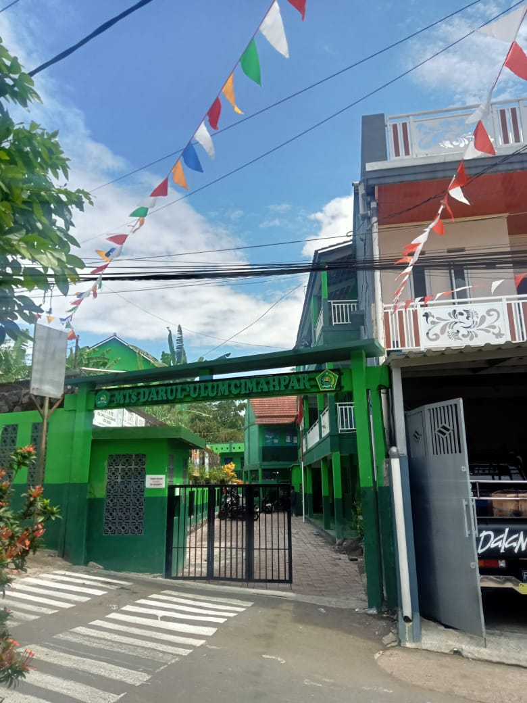

Profil Sekolah
MTs Darul Ulum Cimahpar adalah Madrasah Tsanawiyah swasta yang berlokasi di Jalan Raden Khanifiah, Cimahpar, Kota Bogor, Jawa Barat. Didirikan pada 1 Januari 1970, sekolah ini berada di bawah naungan Kementerian Agama dan berstatus akreditasi B berdasarkan SK Akreditasi Nomor 1347/BAN-SM/SK/2021 yang berlaku hingga 31 Desember 2026.
Visi dan Misi
Visi: Mewujudkan lembaga pendidikan yang aman dan nyaman dengan pembinaan iman, ilmu, dan amal guna melahirkan generasi muda yang berakhlak mulia.
Misi:
- Membangun generasi Islami yang berakhlak mulia.
- Menumbuhkan semangat dan prestasi baik akademik maupun non-akademik.
- Membantu mewujudkan sikap mandiri melalui bimbingan berorganisasi dan latihan-latihan keterampilan.
Prestasi Sekolah MTs Darul Ulum
Juara 1 Lomba Matematika
Siswa MTs Darul Ulum berhasil meraih Juara 1 dalam Lomba Matematika tingkat Kota Bogor pada tahun 2024. Prestasi ini menunjukkan kemampuan akademik yang luar biasa dari siswa kami.
Juara 2 Lomba Debat Bahasa Indonesia
Tim debat bahasa Indonesia dari MTs Darul Ulum meraih Juara 2 pada Lomba Debat Bahasa Indonesia tingkat Provinsi Jawa Barat tahun 2023. Ini adalah pencapaian besar bagi siswa kami dalam bidang komunikasi dan argumentasi.
Juara 1 Festival Seni dan Budaya
MTs Darul Ulum memenangkan Juara 1 dalam Festival Seni dan Budaya tingkat Madrasah Tsanawiyah se-Jawa Barat yang diadakan pada tahun 2023. Prestasi ini mengukuhkan kami sebagai sekolah yang mendukung pengembangan seni dan budaya.
Juara 1 Kompetisi Cerdas Cermat Sains
Siswa kami berhasil meraih Juara 1 dalam Kompetisi Cerdas Cermat Sains tingkat Nasional pada tahun 2022. Kemenangan ini memperlihatkan dedikasi kami dalam mengembangkan ilmu pengetahuan di kalangan siswa.
Ekstrakurikuler
MTs Darul Ulum menawarkan berbagai kegiatan ekstrakurikuler yang mendukung pengembangan potensi siswa di luar pelajaran akademik.

Kegiatan Ekstrakurikuler:
- Futsal
- Silat
- Pramuka
- PMR
- Paskibra
Berita Terbaru
Simak berita terbaru tentang kegiatan dan prestasi sekolah kami.
Kontak Kami
Alamat: Jalan Traa No. 123, Kota Bogor
Email: info@sekolahcontoh.sch.id
Telepon: (021) 123-4567